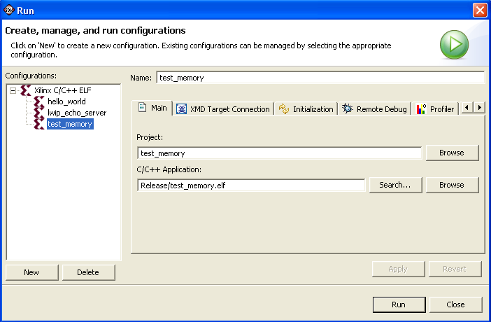

Creating a run, debug, or profile configuration
You can create customized run or debug configuration and save it for reuse.
To create a run configuration:
- In the C/C++ Projects perspective, select a project.
- Click Run > Run (for a run configuration) or Run > Debug (for a debug configuration) .
- In the Configurations list, click Xilinx C/C++
ELF.
- Click New. The name of the new project is displayed in the
Configurations list.

- To change the default name of the new run/debug configuration, refer to
Selecting an application to run, debug, or profile.

Debugging applications
Run overview
Profile overview

Creating or editing a Run/Debug/Profile configuration
Copyright © 1995-2009 Xilinx, Inc. All rights reserved.